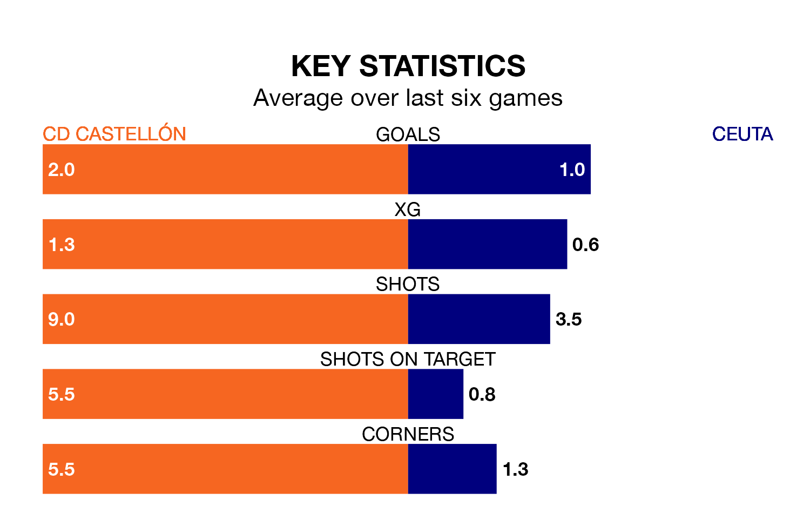

CD Castellón are heavy favourites to keep all three points at home in Sunday's early kick-off against Ceuta.
Castellón, who sit top of Primera Division RFEF Group 2 with 22 games played, are priced at 1.2 to seal victory at Nou Estadi Castalia.
Sitting six places and 21 points behind them in the table, Ceuta are 11.2 to win with *Betting Company*, while the draw is at 4.8.
With 50 goals in 22 games so far this season, Castellón are the league's highest scorers with 2.3 goals per game. And they are conceding fewer than average, letting in 20 goals at a rate of 0.9 per game.
Ceuta, meanwhile, are average scorers, with 1.1 goals per game. They have conceded 1.0 goal per game.
The home side are in fantastic form in Primera Division RFEF Group 2, with five wins and a draw from their last six games.
With two wins and three draws over that period, the visitors' form is much worse – they have taken nine points from 18, compared to Castellón's 16.
Castellón's last match was on February 3, a 1-1 draw against Atlético Madrid B.
Ceuta beat Real Madrid B 2-0 last time out, on February 4, with Aisar Ahmed Ahmed on the scoresheet.
Updated: 10:01 (UTC), 06/02/24